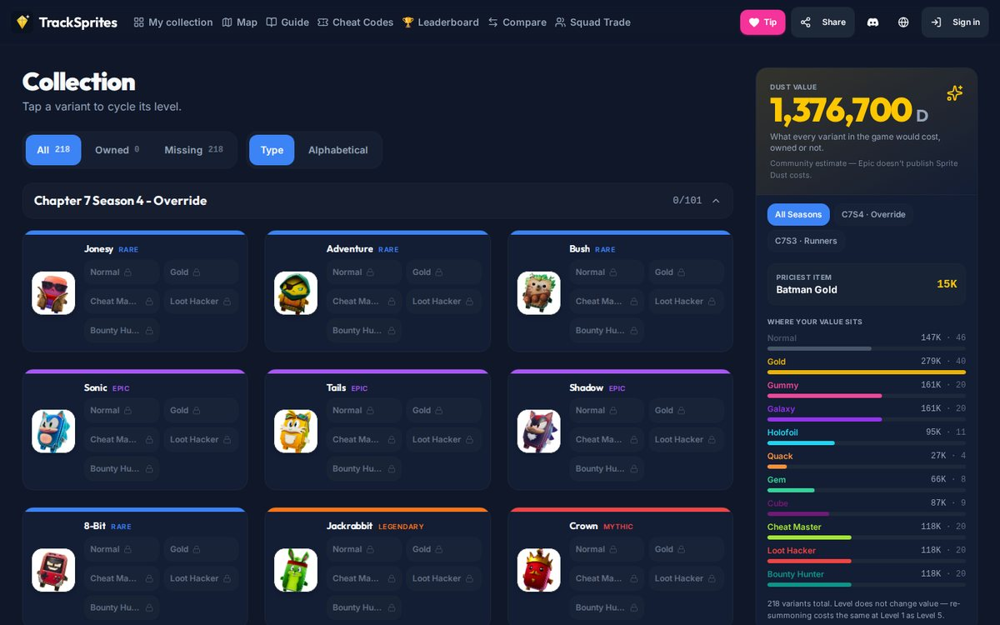

tracksprites.com
A Fortnite companion app for tracking, trading and comparing Sprite collections, kept current by AI agents.
- Role
- Solo: design, build, run
- Status
- Live
- Platform
- Installable web app (PWA)

Collection tracker: 218 variants across two seasons, with live dust-value analytics.
The challenge
Fortnite's Sprites are collectibles with multiple variants and mastery levels, and new ones arrive every season. Epic provides no tool to track a collection, estimate costs, find codes or coordinate trades, so players used spreadsheets and Discord threads.
What I built
TrackSprites started as a single tracker and grew into a full companion app. It has collection tracking with dust-value analytics, an interactive map, a code checklist, compare and squad-trade planning, and leaderboards with public profiles.
Scheduled AI agents keep it current each season. One checks daily for new codes and variants, and another posts to the Discord and Facebook communities twice a day.
Results
- Live on its own domain with a real player community.
- Top collectors are tracking 200+ variants each on the leaderboard.
- New in-game content reaches the site the same week it appears, as the Loot Hacker variant tier did.
Built with
- React + Vite
- TypeScript
- Tailwind CSS
- Express 5
- PostgreSQL + Drizzle
- OpenAPI / Orval
- OAuth (Discord · Google · Epic)
- Workbox PWA
- i18next
- Claude Code agents
Features 21 total
Collection + analytics
- 218 variants across two seasons (C7S3 Runners, C7S4 Override), grouped by season
- Tap a variant to cycle its state: locked → levels 1–4 → mastered
- Owned / Missing filters and sort by type or name
- Dust-value panel: the total value, a breakdown by variant tier, and the priciest item
- Dust calculator (bottom sheet on mobile, sidebar on desktop) and a Gizmo progress tracker
Player tools
- Interactive, zoomable island map with spawn info
- Lobby Hack code list (44 codes) with copy buttons and a redeemed checklist
- Compare your collection with any player
- Squad Trade: builds a plan so every player in a 2–4 person squad gets something; live trade rooms by code
- Share links that don't require sign-in, plus export of the collection as an image
- Strategy guide
Community + accounts
- Season and all-time leaderboards, plus friend groups
- Public profiles at /u/username
- Sign in with Discord, Google or Epic; works without an account, and saved progress merges in on first sign-in
- Discord community; lore and tips auto-posted to Discord and Facebook twice a day
Platform + operations
- Installable PWA that works offline
- Available in English, Spanish, French and Japanese
- Daily scheduled AI agent checks for new codes and variants and only publishes a change once two independent sources confirm it
- Falls back to a Replit mirror of the code when GitHub access is blocked
- Content bank served as JSON and chosen by date, so no state file is needed; a relay endpoint handles Facebook posting
- OpenAPI spec as the single source of truth for the API, with a typed client generated from it; written threat model